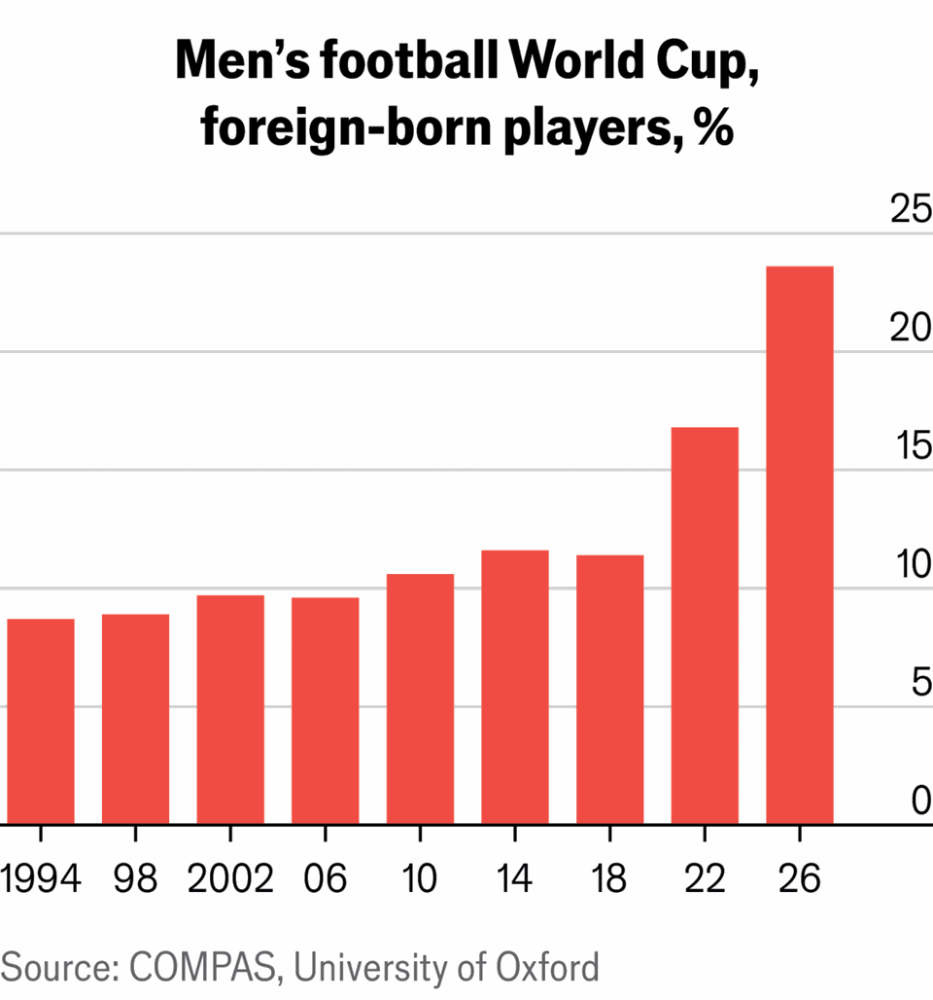

How to win the World Cup
Being rich helps, but being open to immigration works best of all
June 11th 2026
Since 1930 more than 80 countries have participated in 22 World Cup tournaments. Yet only eight have ever claimed the trophy. Why are just a handful of countries so good at the game?
The question vexes many, and not just football fans. Xi Jinping, China’s leader, has long coveted footballing glory; so has Muhammad bin Salman, Saudi Arabia’s crown prince. Success on the pitch is good politics. It can lift the public mood and improve foreigners’ perceptions of a country. But glory is hard to come by.
Like many before us, The Economist has tried to work out a formula for success at football. We built a simple model, based on national teams’ Elo ratings. This measure of performance, derived from chess, takes account of the calibre of opponents and is considered a better proxy for quality than tournament results, which can be skewed by a kind draw or an inspired goalkeeper. We then calculated how much of the gap between countries can be explained by different variables, from the strength of a country’s democratic institutions to the average height of its men.
The most influential factors, we found, were wealth, population, height and geography. Together these account for around 70% of the variation in Elo scores. Yet no single factor is decisive. Rich countries spend more on coaching, facilities and youth development, but do not always excel. America is wealthy, but most of the money in American sports flows to other games. The monarchies of the Gulf are filthy rich and football-mad, but still underperform.
Size matters as well. A bigger population offers a deeper talent pool—yet as China and India show, it is no guarantee of glory. Despite their billion-plus populations, the two countries have qualified for just one World Cup between them. Size counts more literally, too. Our analysis suggests the optimal height for players other than the goalie is around 181cm. The further a country’s average man stands from that mark, the worse it tends to fare.
Yet the most powerful variable is one no government can influence: geography and the sporting culture it brings with it. For instance, South American teams average around 640 Elo points more than their Asian counterparts, which means they are expected to beat them more than 90% of the time. Even after adjusting for differences in income, population and physique, the chasm narrows only to 492 points. European teams also enjoy an edge.
These regional advantages reflect deep-rooted differences in the depth of coaching and the intensity of competition. European leagues are a magnet for global talent, audiences and investment. The continent is home to more than 200,000 coaches, far more than any other confederation. India has around 50 coaches holding Asia’s highest-level licence; Spain, with less than 5% of India’s population, has more than 2,000 with the equivalent qualification. Money compounds such divides. Richer confederations, such as in Europe and South America, can plough far more into coaching and youth development.
All this makes footballing success self-perpetuating. Our analysis suggests that the best predictor of where a country ranks today is where it ranked decades ago. Around four-fifths of the countries in the top quarter of the Elo table in 1976 are still there. But as difficult as catching up is, it is not impossible. A handful of countries have managed to rise up the rankings.
Japan is one of them. It had never reached a World Cup before 1998 but has not missed one since. At the most recent tournament, in Qatar, Japan beat such heavyweights as Germany and Spain. Many consider it a dark horse this time. The improvement cannot be ascribed to Japan’s economy or population, both of which have stagnated since the 1990s. Instead Japan’s success reflects the strategy adopted by its football authorities.
In 1992 Japan revamped its amateur league and launched a “Hundred Year Vision” with the goal of forming 100 professional clubs by 2092. It has since continuously tweaked this plan, studying global tactical trends and disseminating them at home. This includes prescriptions for clubs, which are required to run youth academies, and for the types of players they are urged to produce. Once celebrated mainly for discipline and hard work, Japanese pros today dazzle with their skill, often in big European leagues.
Critically, Japan’s approach is bottom-up. China, in contrast, has tackled football in the same way it pursues Olympic glory: through a centralised, lavishly funded effort to nurture talent. It has failed because football depends on improvisation, unpredictability and a deep grassroots base, argues Mark Dreyer, a sports journalist.
Successful as Japan’s methods have been, they are also slow and expensive. For many poorer countries, there is a faster route: importing talent. For example, Senegal has climbed up the rankings not by developing football infrastructure at home, but by drawing on a diaspora trained at academies abroad. Around half of the Teranga Lions’ squad at the World Cup are sons of Senegalese migrants (largely in France). This is akin to funding development through remittances: Senegal is earning rewards from its exports of labour.
Fully 96% of Curaçao’s squad at this tournament and 62% of Cape Verde’s were born abroad. These teams are merely extreme examples of a broader shift. Since 1994 the share of players competing for a country other than the one of their birth has climbed rapidly, from 9% in 1994 to 24% today.

There are other ways to import talent. Countries that are usually stingy with passports sometimes throw them at footballers. Qatar, for instance, fields several naturalised players, such as Belgian-born Edmilson Junior. China’s big star, Serginho (or Sai Erjiniao, as he is known in his adopted home), was born in Brazil. At times this ruse exceeds even the permissive rules adopted by FIFA, football’s governing body: last year it punished Malaysia for fielding seven players whose Malaysian roots had been falsified.
Malaysia’s desperation is an indication of the rich rewards the strategy can bring. One study of World Cups found that teams with more foreign-born players tended to progress further, even after controlling for wealth and footballing tradition. At the previous World Cup, Morocco offered even more vivid proof: it became the first African team to reach a World Cup semi-final with a 26-man squad of whom 14 were foreign-born.
The benefits of migration accrue to both the exporting and importing country. The children of migrants to Europe often end up playing for their parents’ adoptive country, not their original one. Spain’s biggest star, Lamine Yamal, is the son of immigrants from Morocco and Equatorial Guinea. England’s front line will feature Bukayo Saka (of Nigerian heritage) and Marcus Rashford (of Caribbean). France’s team is almost entirely made up of the children of migrants. Its squad features Désiré Doué, whose family captures the duality of migration’s impact on football. Désiré plays for France, but his brother Guéla represents Ivory Coast.
Drawing on a more diverse talent pool boosts performance on the pitch. A study in 2023 found that an increase in a squad’s “ancestral diversity” leads to better results. In the deep soul-searching prompted by Italy’s failure to qualify for this World Cup (the only past winner to miss out), some commentators blamed strict citizenship rules that have prevented many migrants from playing for the Azzurri.
Unsurprisingly, the diversity of successful football teams infuriates racists and foes of migration. When England inevitably gets knocked out of tournaments, it is its black players that cop the most abuse. A study published earlier this year found that victories by more diverse teams are followed by more favourable attitudes to immigration, but that losses can worsen perceptions of immigrants and increase support for the far right. Victory or defeat is not just a matter of bragging rights. ■